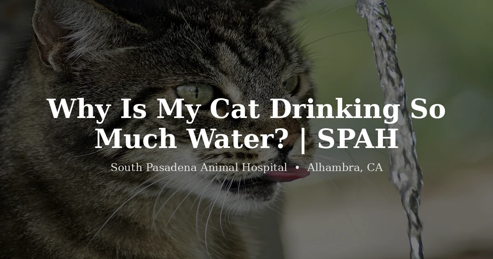

October 14, 2026 · 6 min read
Why Is My Cat Drinking So Much Water?

If you've noticed the water bowl emptying faster, or caught your cat hovering at the faucet when it never used to, pay attention to that instinct. Of all the subtle changes cats throw at us, a jump in thirst is one we take the most seriously, because it's frequently the very first outward sign of a problem brewing on the inside. Cats are masters at hiding illness, so when they hand us a visible clue this early, it's worth acting on.
Here's what increased thirst usually means, and why catching it early matters so much.
What normal looks like first
Cats aren't big drinkers by nature. Their ancestors were desert animals that got most of their moisture from prey, and that shows: a cat on wet food may barely touch the water bowl, while a cat on dry food drinks noticeably more to make up the difference. Both are normal. Rather than chasing an exact ounce count, watch for change. A cat that has clearly started drinking more than its own baseline, refilling trips to the bowl, puddles of attention at the sink, bigger clumps in the litter box, is the one telling you something.
The three big reasons, especially in older cats
When a middle-aged or senior cat ramps up its drinking, three conditions sit at the top of our list. The good news in all three is that they're manageable, often for years, when we catch them early. That's the whole reason we don't want you to shrug this off.
Chronic kidney disease
This is the most common one in older cats. As the kidneys lose their ability to concentrate urine, the body leaks water, and the cat drinks more to keep up. Increased thirst and urination are often the earliest signs, showing up well before weight loss or a poor coat.
Diabetes
When blood sugar runs high, the body dumps the excess into the urine and pulls water along with it, driving up both thirst and urination. A diabetic cat is often hungry and drinking a lot yet still losing weight. Caught early, many cats do very well with treatment, and some even go into remission.
Hyperthyroidism
An overactive thyroid revs the whole metabolism. These cats are typically ravenous, restless, losing weight despite a big appetite, and drinking more. It's very common in older cats and very treatable, which is a good reason to put a number to that thirst sooner rather than later. We go deeper on this in our piece on feline hyperthyroidism.
Other possibilities
Thirst can also climb with a urinary tract infection, liver disease, certain medications, or simply hot weather and more activity, which matters here in the San Gabriel Valley during a long summer. The trouble is that you can't tell the harmless causes from the serious ones by watching the bowl. That's a job for bloodwork and a urine test, both of which are quick and tell us a lot.
When increased thirst needs a vet
Book a visit, generally within a few days, if your cat:
- Has clearly started drinking more than its normal baseline
- Is also urinating more, with bigger or more frequent litter clumps
- Is losing weight, or eating much more or much less than usual
- Seems more tired, or its coat has gone dull or unkempt
Treat it as urgent if your cat is also vomiting, refusing food, very lethargic, or straining in the litter box with little coming out, which in male cats can signal a dangerous urinary blockage that needs care right away. We see cats at our cat vet in Alhambra, and a thirst change is exactly the kind of early clue a senior wellness workup is built to catch. Our senior cat care guide and pricing page are good next reads.
Frequently Asked Questions
How much water is too much for a cat?
Roughly, cats need about 3.5 to 4.5 ounces of water per 5 pounds of body weight a day, counting moisture from food, and wet-food cats drink far less from the bowl than dry-food cats. More telling than any number is a clear change: a cat suddenly emptying the bowl, seeking taps, or drinking much more than before is worth a vet's attention.
What does it mean when an older cat drinks a lot of water?
In middle-aged and senior cats, increased thirst is a key early sign of chronic kidney disease, diabetes, and hyperthyroidism in particular. All three are far more manageable caught early, so a senior cat drinking more deserves a check-up with bloodwork and a urine test, not a wait-and-see.
Is a cat drinking a lot of water an emergency?
The thirst itself usually isn't a middle-of-the-night emergency, but it's a signal not to ignore, and it warrants a prompt visit within days. It becomes urgent if your cat is also vomiting, not eating, losing weight fast, very lethargic, or straining to urinate, which in male cats especially can mean a life-threatening blockage needing immediate care.
Why is my cat drinking more and peeing more?
They tend to go together, because the body is either losing water it can't hold or flushing out excess sugar or waste. That pairing is classic for kidney disease and diabetes. A vet can usually pinpoint the cause with bloodwork and a urinalysis, so it's worth checking rather than guessing.